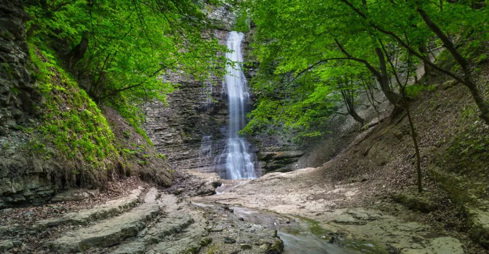
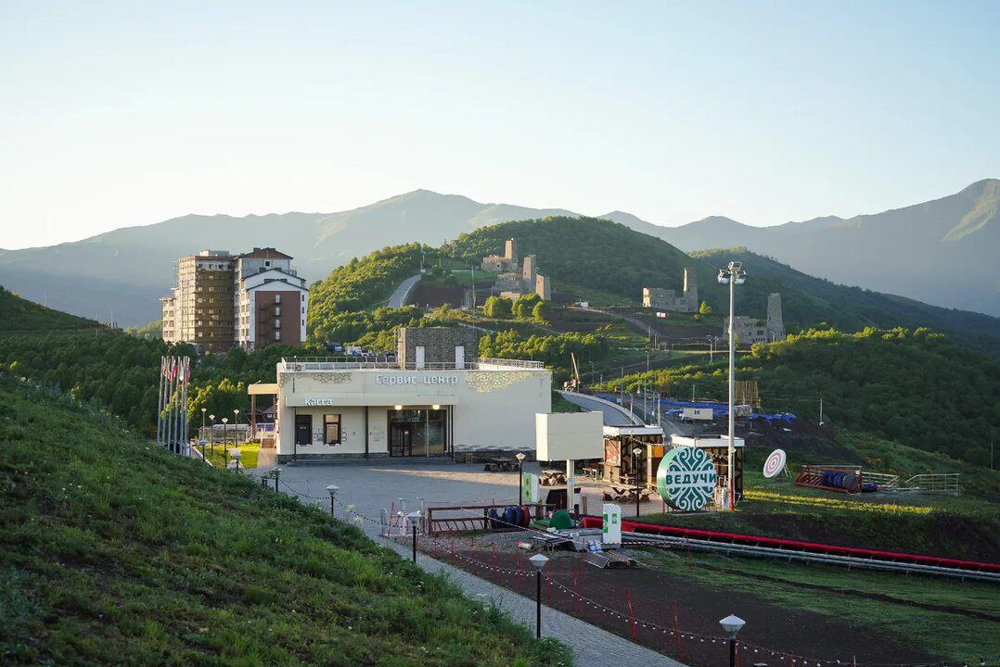

Возвращение домой: есть путь обратно
Будучи чеченкой, я уже давно не посещала свою родину, поэтому этот визит оставил у меня много положительных эмоций. Я хочу, чтобы вы, как и я, хоть немного увидели этот мир и прониклись его красотой и культурой.
Места, которые я посетила
Нихалойские водопады
Каскад водопадов на притоке реки Чанти-Аргун в Шатойском районе. Самый высокий водопад достигает 32 метров, а для туристов обустроены лестницы и переходы.
Лестница в небеса

Смотровая площадка в Итум-Калинском районе, известная захватывающими видами на Аргунское ущелье, особенно на закате.
Мечеть "Сердце Чечни"

Одна из крупнейших мечетей мира в Грозном, площадью 5000 м², с мраморными стенами и 36 люстрами, украшенными кристаллами Swarovski.
Курорт Ведучи
Горнолыжный курорт в Итум-Калинском районе, расположенный в Аргунском ущелье, с современными удобствами для отдыха.
Английский замок

Архитектурный комплекс в Грозном, вдохновлённый английской готикой, с элементами чеченской культуры.
Ушкалойские башни

Средневековые сторожевые башни в Аргунском ущелье, высотой около 12 метров, служившие для контроля торговых путей.
Озеро Кезеной-Ам

Самое большое озеро Северного Кавказа на высоте 1869 м, с глубиной до 74 м и кристально чистой водой.
Мои впечатления
| Место | Адрес | Моё впечатление |
|---|---|---|
| Нихалойские водопады | Шатойский район, Нихалойское сельское поселение, село Нихалой | Шум водопада и горы подарили покой. |
| Лестница в небеса | Байсангуровский район | Подъём трудный, но виды вдохновляют. |
| Мечеть "Сердце Чечни" | просп. Хусейна Исаева, 90 | Величие мечети вернуло чувство дома. |
| Курорт Ведучи | Итум-Калинский район, Ведучинское сельское поселение, село Ведучи | Горы и уют — место для души. |
| Английский замок | ул. Братьев Дубининых, 23 | Сказочный вид с чеченским характером. |
| Ушкалойские башни | Итум-Калинский район, Чиннахойское сельское поселение, село Чиннах | История предков тронула до слёз. |
| Озеро Кезеной-Ам | Веденский район | Кристальная вода и горы — умиротворение. |